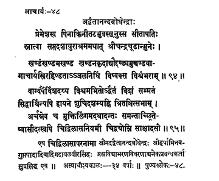

48. आचार्य - 48 - अद्वैतानन्दबोधेन्द्रः
प्रेमेशस्य ••• विश्वंभराम् ॥ ९४ ॥
वाग्वर्षैर्विशदय्य ••• साक्षादसौ ॥ ९५ ॥
एष ••• सुप्रसिद्ध एव ॥
Sītāpati, son of Premeśa, on the banks of river Pinākinī, received at the age of seventeen years, initiation into asceticism from preceptor Śrī Candracūḍa; that eminent preceptor defeated in debates great scholar poets Śrī Harsha, Abhinavagupta and others and wandered three times throughout the earth.
This preceptor Cidvilāsa, revered by all, spread the tenets of Advaita through his eloquent teachings reached Cidambaram; worshipping the Muktiliṅga, he disappeared in the air in the very presence of the onlookers all around, on the tenth day of the bright fortnight of Jyeṣṭha in the year Siddharthi.
This preceptor Śrī Advaitānandabodhendra, also known as the author of Brahmavidyābharaṇavivaraṇa and other works and a lion to the elephants, viz., refuting the views of Śrī Harsha, Abhinavagupta and others in debates.
His preceptor-ship spread over thirty-four years.
